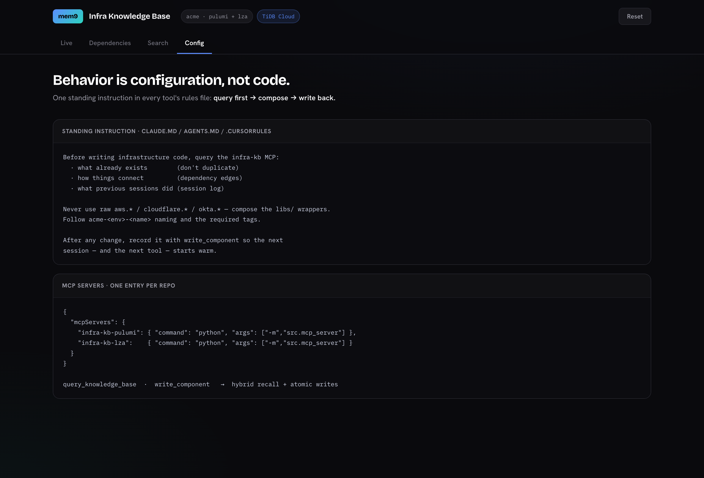
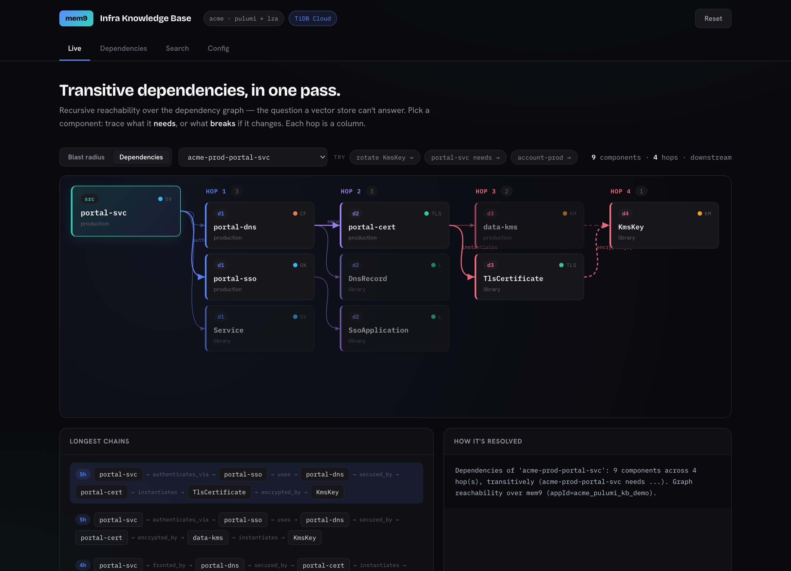
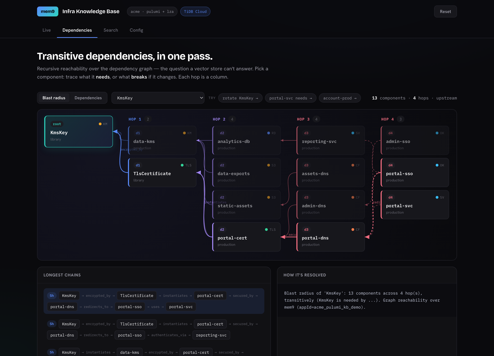
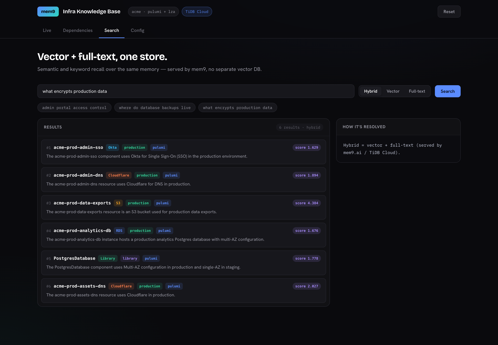
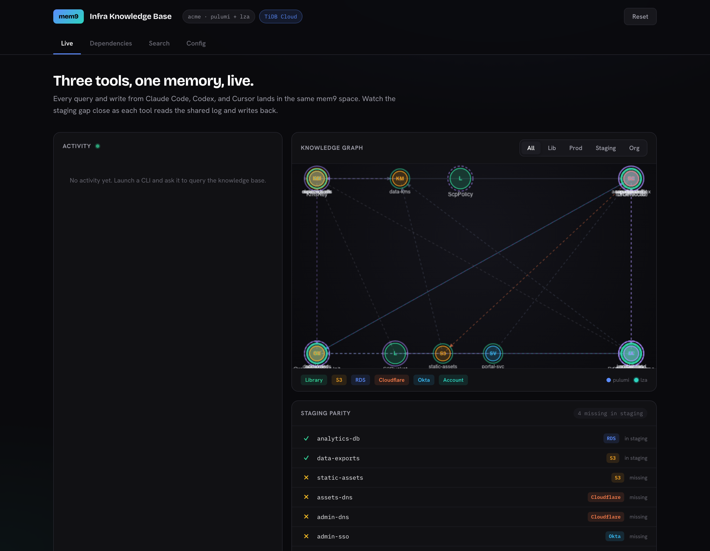

A platform team runs its infrastructure as code — AWS, Cloudflare, and Okta via Pulumi, plus an AWS Landing Zone for accounts and guardrails. Increasingly that code is written by AI coding agents. The problem isn't any single agent's capability; it's that they share no memory. Each session starts cold, re-derives context from the filesystem, and re-makes the same mistakes.
An agent can't see a component already exists, so it builds a second one — a duplicate bucket, a parallel DNS record.
It writes a raw aws.s3.Bucket instead of the library wrapper, skipping required tags and encryption.
It changes a shared library and breaks resources two or three hops away that it never saw.
The next session — or the next tool — re-derives everything from scratch and repeats the same errors.
mem9 maps cleanly onto how teams already organize work. A team is a mem9 space — one API key, one isolated TiDB Cloud cluster behind it. A repo is an appId namespace inside that space, so multiple repos share a cluster but keep separate recall scopes.
appId acme_pulumi_kb
AWS · Cloudflare · Okta IaC. 21 components: reusable libraries plus production and staging instances.
appId acme_lza_kb
AWS Landing Zone: accounts, OUs, SCPs, IAM baseline. 11 components modelling the org layer.
account_ref links LZA accounts to the Pulumi stacks that live in them — recalled from both namespaces and merged client-side.Every tool loads the same Model Context Protocol config — one named server per repo. No custom glue per tool.
Relational state, the dependency graph, vector embeddings, and full-text all live in the same memory. No ETL between four systems.
mem9 provisions and manages the TiDB Cloud cluster. Agents read and write through one key and never touch credentials.
Loaded into every tool's rules file (CLAUDE.md / AGENTS.md / .cursorrules), so the read-first / write-back behavior happens on every run with no per-task reminder:
Before writing infrastructure code, query the infra-kb MCP: · what already exists (don't duplicate) · how things connect (dependency edges) · what previous sessions did (session log) Never use raw aws.* / cloudflare.* / okta.* — compose the libs/ wrappers. After any change, record it with write_component so the next session — and the next tool — starts warm.

A vector store finds things that look related. It cannot compute a transitive closure — "what, exactly, breaks if I change this?" That is graph reachability, and it is what recursive traversal over the dependency graph gives you. The knowledge base records each depends_on and every composition edge; mem9 holds them, and a single traversal walks the chain to any depth.
The production customer-portal service sits at the top of a chain that bottoms out at a single KMS key — five hops down, across four resource types:

Run the traversal in reverse from KmsKey — "what breaks if we rotate it?" — and the answer is 13 components across four depths. No flat search or similarity ranking surfaces this; only walking the graph does.
| Depth | Count | Components reached |
|---|---|---|
| d1 | 2 | data-kms, TlsCertificate |
| d2 | 4 | portal-cert, analytics-db, data-exports, static-assets |
| d3 | 4 | portal-dns, admin-dns, assets-dns, reporting-svc |
| d4 | 3 | portal-sso, portal-svc, admin-sso |

The same memory that holds the graph also answers semantic and keyword queries. Ask "what encrypts production data" and mem9 returns the KMS key, the resources it encrypts, and the TLS cert — ranked by hybrid relevance, served from TiDB Cloud with no separate vector database and no synchronization to keep in step.

| Approach | Graph reachability | Semantic recall | Atomic agent state |
|---|---|---|---|
| S3 / filesystem | no traversal | no | no transactions |
| Vector DB only | similarity ≠ reachability | yes | no |
| Four separate systems | partial, with ETL | yes | no cross-system atomicity |
| mem9 → TiDB Cloud | recursive traversal | vector + full-text | one transaction |
Component, edge, and session-log entry are written together. Relational state, the dependency graph, vector embeddings, and full-text indexes are one engine — so the agent's memory is consistent across concurrent writes from all three tools.
Production is complete; staging has drifted — it's missing its DNS and SSO layer (four components). Three different tools bring staging to parity, each reading the shared memory before it builds and writing back when it's done. No agent starts cold.
Queries the KB, finds staging missing static-assets + DNS, composes the libraries, writes both back. Gap 4 → 2.
Opens cold with zero context. Reads the shared session log, sees what was just built, continues with admin-DNS. Gap 2 → 1.
Traces what prod's admin-SSO depends on, confirms it must redirect to a DnsRecord, builds the matching SSO app. Gap 1 → 0.

Each tool attributes its work in the activity feed; the parity strip turns green as the gap closes. The same component graph, dependency traversal, and hybrid search shown in this report are all live views over the one mem9 space — the dashboard is an observability window on the system, not the system itself.